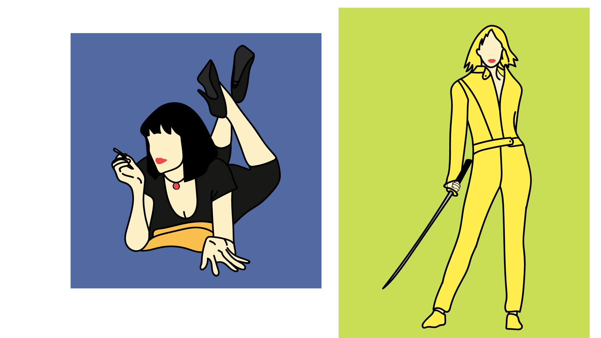
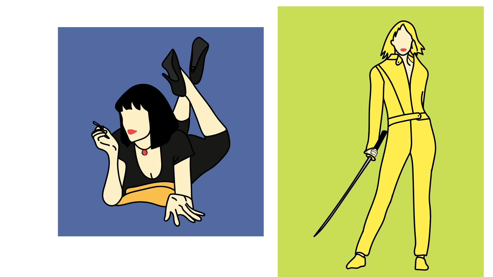

Carlos Diaz
Currently declared as a film major but also considering obtaining a second major, or possibly minor, in computer science/engineering. For as long as I can recall, I have always loved film and dreamed of one day becoming a filmmaker. Whether it was filming my own Bond film, or a rudimentary stop motion animation, my desire to create was endless. Now, my passion for film has grown exponentially, leading me to pursue a degree in film. Although I have not declared a concentration for my major, I have a general sense of what aspects of film I would like to focus in on more, the main being: directing and editing. As much as I would love to write scripts, act, or film, I currently do not seem to possess the skills necessary for these paths, however, if the opportunity to learn such techniques were to arise, I would act promptly.
As far as technical skills go, I am quite proficient with several of the Adobe programs (Photoshop, Illustrator, and Premiere Pro), and a few other video and photo editing software. As far as my education goes, in regards to the video and editing softwares, I had the privelege of learning in several high school courses. I was also lucky enough to have a seasoned and articulate instructor who was an experienced graphic designer who happened to be metored by the artist, Steve Harrington. Other than that, I also taught myself through YouTube tutorials and mere trial and error.
Besides film, I also have a love for music and health/exercise. Despite knowing how to play decently well on several instruments, I am nowhere near proficient nor am I even close to what could be considered advanced. However, I am quite knowledgable when it comes to nutrition and exercise. For some unknown reason, I have developed a fascination with the human body and anatomy and have done much to learn about nutrition and exercise. If all else fails, I would entertain the possibility of being a physical therapist or something of the sorts.
Experience
Multimedia Amatuer
• Tradtionally and self-taught
• Have made several montage compilations and "short films"
• Experience with HTML, Illustrator, Photoshop, Premiere Pro, HitFilm
Professional Pizza Deliverer
• Have the responsibility of delivering pizzas both on time and in one piece
• Also work in the kitchen preparing the pizzas for delivery
High School Honor Guard
• Was recognized along with several other classmates as being the top students of our grade
• Considered to be the highest honors obtainable in high school
Education
Patriot High School
University of California Riverside
Portfolio


